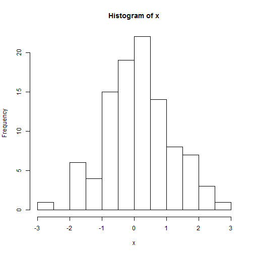

install_github('slidify', 'ramnathv')
library(slidify)
author"second_deck"
slidify( "index.Rmd")
browseURL("index.html")
Let's see how simple coding works showing results and evaluating it. But without showing the code (echo = FALSE). The code is creating a random normal vector, showing the mean, its standard deviation and its histogram.
## [1] 0.1375552
## [1] 1.024235
Thank you for taking the time to learn some basics. .. Now, take a look at the last slide (5) and see the histogram. Each time you refresh it, is a new histogram created? Not yet... Interactive slidify will be presented in some new presentation.
#PRACTICE IT!

Thank you for taking the time to learn some basics.
Now,
#PRACTICE IT!